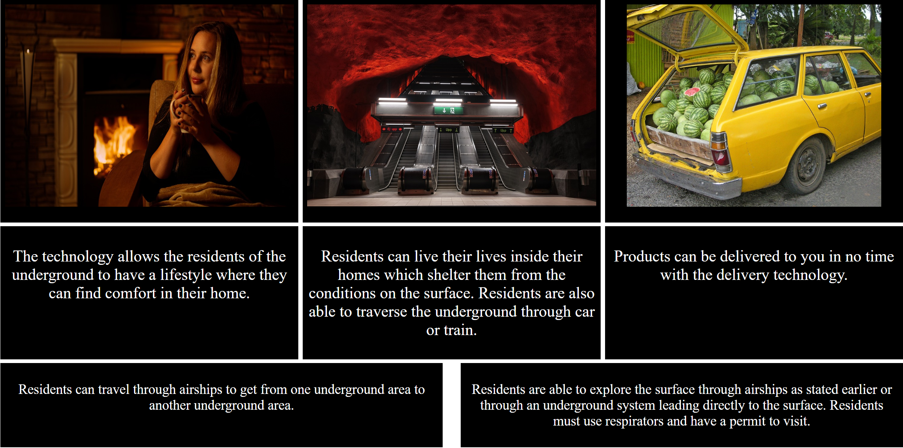

Work

DelveHomes Website
For the website, we were tasked with creating a website based on the short story, E.M. Forster’s “The Machine Stops” which is about humanity living underground, believing the surface is uninhabitable. Our goal was to create a website where people can browse the underground homes and learn more about the company. This website was created with a partner that would work on different parts of the website. Software I used was VS Code for creating the website’s code, HTML for creating the visual parts of the website, CSS for stylizing the website, GitHub for sharing code and saving the code, and Netlify, for publishing the website. Concepts we learned when creating the website was the ability to create a background image for the website and how we can use media queries to adjust the website for both desktop and mobile devices. We were successful in adjusting the background image to a size we wanted that was possible as well as making the website informative. Challenges we faced were aligning the text boxes where we needed them to be. The habits of mind we employed were investigation to look for solutions to our problems, collaboration to help each other out with the website, and communication when we discussed what we would do with the website.
Water Conservation Website
For this project, we had to decide which social issue topic to talk about and make a website encouraging others to make changes about this issue. In my case, I chose water conservation because it is a topic that most people think of when they think of social issues. I made this website with the intent of encouraging people to save water by telling them what it is and how to save water. This website was created by instructing other people to work on the website. Software I used was VS Code for creating the website’s code, HTML for creating the visual parts of the website, CSS for stylizing the website, GitHub for sharing code and saving the code, and Netlify, for publishing the website. Concepts I learned from creating this website was utilizing padding for sizing images and photoshopping photos to make the image focus on an area I want the center of the image to be. I was successful in making an almost perfect replica of the prototype website. Challenges I faced were finding areas of an image that I wanted to photoshop, and having to deal with other student’s different styles of coding. The habits of mind I employed were communication, where I would tell them what I wanted them to do and initiation, where I would figure out what I want each person to do when making code for my website.

Web Game
For this project, we had to decide which social issue topic to talk about and make a website encouraging others to make changes about this issue. In my case, I chose water conservation because it is a topic that most people think of when they think of social issues. I made this website with the intent of encouraging people to save water by telling them what it is and how to save water. This website was created by instructing other people to work on the website. Software I used was VS Code for creating the website’s code, HTML for creating the visual parts of the website, CSS for stylizing the website, GitHub for sharing code and saving the code, and Netlify, for publishing the website. Concepts I learned from creating this website was utilizing padding for sizing images and photoshopping photos to make the image focus on an area I want the center of the image to be. I was successful in making an almost perfect replica of the prototype website. Challenges I faced were finding areas of an image that I wanted to photoshop, and having to deal with other student’s different styles of coding. The habits of mind I employed were communication, where I would tell them what I wanted them to do and initiation, where I would figure out what I want each person to do when making code for my website.